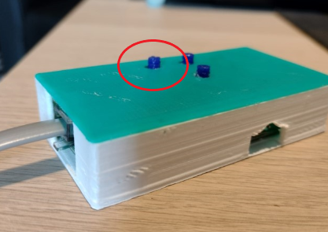

Volg deze video
Of volg deze aanwijzingen:
1. Verbinden met uw slimme meter
Gebruik de bijgeleverde kabel om de Twomes P1-Gateway te verbinden met de P1-poort op uw slimme
meter.

Deze poort is meestal te vinden op de voorkant of onderzijde van uw slimme meter.

De locatie van de P1-Poort op de Enexis ESMR5 Slimme Meter
Als u een DSMR versie 4.x slimme meter heeft:
Doe dan ook de USB stekker in de zijkant van de Twomes P1 Gateway, en steek de stekker in het
stopcontact

Als de P1 Gateway goed aangesloten is knippert er een groen lampje
de P1-Gateway is nu klaar om
te verbinden met de app
De Wi-Fi gegevens resetten
Als het Wi-Fi wachtwoord verandert, of als het verkeerde wachtwoord is ingevoerd kan het Wi-Fi wachtwoord
gereset worden door de knop "P2" 10 seconden lang ingedrukt te houden

2. Sensoren verbinden met de P1-Gateway
Doe de batterij in de achterkant van de sensor-modules

Druk nu tegelijkertijd de knop "Reset" en "P2" in. Reset kan meteen weer losgelaten worden, houd na het
loslaten van Reset de knop P2 nog 2 seconden ingedrukt:

De sensor is nu in de pairing modus. Nu kan de P1-Gateway ook in de pairing modus gezet worden.
Druk op knop P2 van de P1-Gateway om de Gateway in pairing modus te zetten. De Gateway zoekt
nu naar andere sensoren in de buurt en verbindt deze aan de P1-Gateway
als de pairing is gelukt knippert het groene lampje op de sensor, deze is nu verbonden aan de
gateway en kunnen geplaatst worden.
De sensoren plaatsen
Kamertemperatuur en CO2 sensor
Plaats de Kamertemperatuur sensor en CO2 Sensor module, wanneer mogelijk, zo dicht mogelijk bij uw
thermostaat. Mocht dit niet lukken, zorg dan in ieder geval dat het niet op een afgesloten plek komt te
staan zoals in een kast tussen spullen of in een la.

De Kamertemperatuur sensor staat naast de thermostaat
CV-ketel temperatuur sensor
De CV-ketel temperatuur sensor bevat twee aparte kleine bordjes, deze zitten via een kabel aan de
CV-ketel module:

De rode streep op de kabel zit aan de rechterkant, en de kabel loopt in de lengte mee met de lange kant
van het printplaatje
De kabel kan dan bevestigd worden in het clipje. en de andere kant kan worden geplaatst in de Twomes
CV-Ketel module:


De CV-Ketel sensor module kan nu opgehangen worden bij de CV-Ketel. De bevestigingsclipjes kunnen
vastgeklikt worden op de leiding: